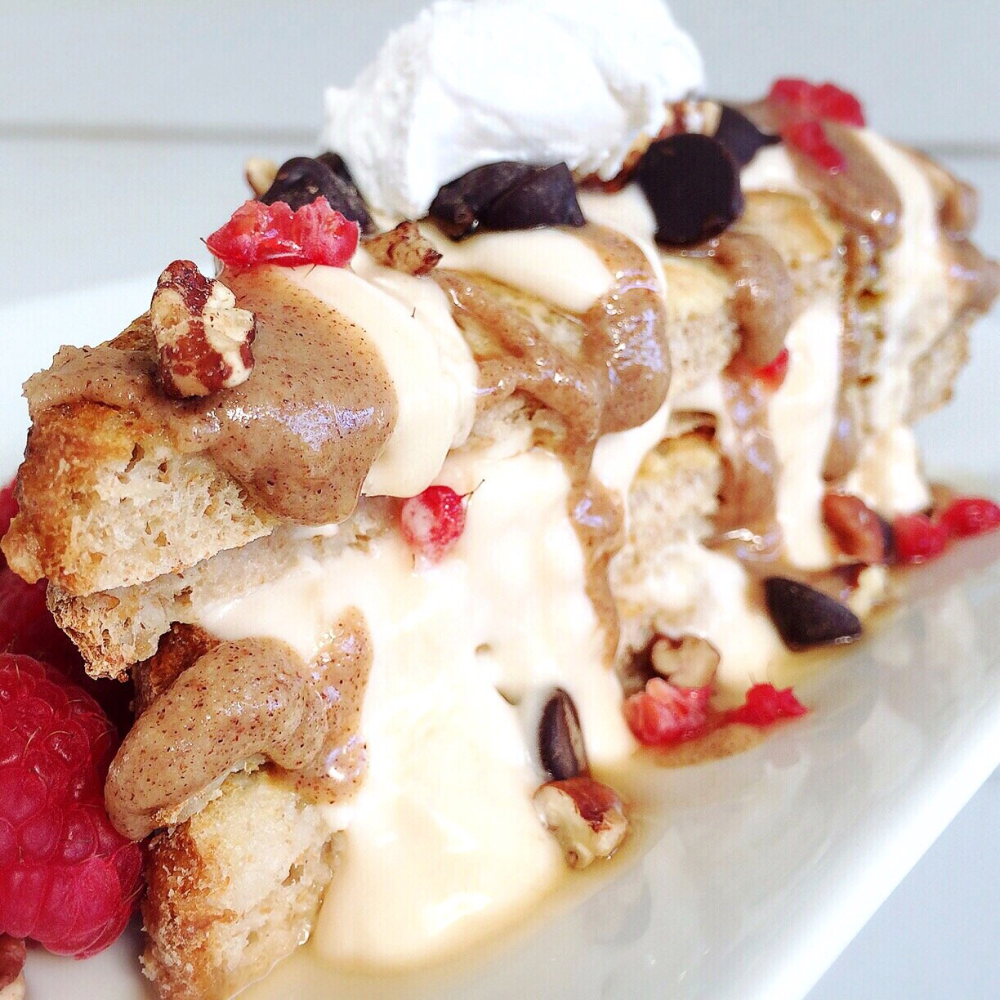
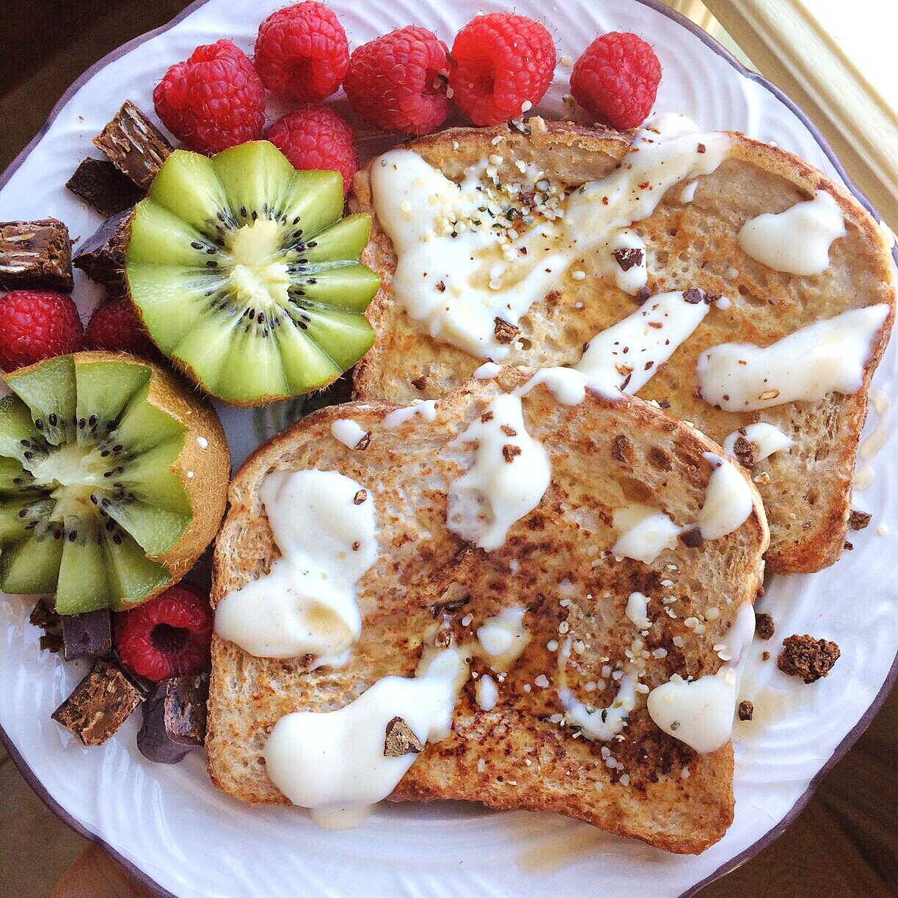

Best Vegan French Toast


No lie. Best vegan french toast recipe for sure. When I first went vegan, I saw how most recipes used mashed banana rather than egg. I tried this out, and it was..okay? It was good but never as good as "normal" french toast. If you want banana french toast, it's awesome! But if you want a basic french toast base, the banana flavor just gets annoying.
So I was playing around with flour instead of banana. And YES!! I would choose this version over the egg version any day. Such a perfect crisp and a full, sweet flavor. Vegan or not, you've got to try this! Two days in a row of this, and I want it for dessert too... oops.
I went to an anime convention last night, and it was so funnnn. I haven't been to a con in almost a year, and I missed it so much. I went there just knowing one person (with maybe seeing another) and I ended up meeting soo many awesome people D; it warms my heart. I normally don't put myself into situations where I don't know people - since I'm shy. But I've been trying more consciously to do that. Something about conventions and that culture makes it so much more comfortable and easy to meet people. I had teh funs. :3 I haven't cosplayed in like... a year and a half... and it got me really inspired to finish a cosplay I began but never finished. Anyone know of Headhunter Caitlyn from league of legends? I am half way through her cosplay but quit because I suck at weapons and hardware. Buuuut we will see!! Fun times. :3
I think being around good people and meeting new people again has put me in such high moods lately. I can feel a huge spark in creativity in terms of recipes, video ideas, and other creative outlets I have - and just life in general. It's such a good feeling. I guess I have them to thank for this french toast? Hey thanks, friends.
Best Vegan French Toast
Serves: 1
-
2 slices bread of choice
-
2 TBSP gluten free flour (I use King Arthur's)
-
1/4 cup unsweetened cashew milk (or almond)
-
1 stevia packet
-
1/2 tsp vanilla extract
-
In a shallow bowl or container, slowly mix the milk together with the flour, whisking as you add the milk to prevent any clumps from forming. Then add the stevia and vanilla extract.
-
Set the bread slices in your shallow bowl or container, allowing the bread to soak up the flour mix. After soaking for 30-60 seconds, flip the bread slices to soak the other side.
-
Heat a pan over the stove top. Spray with nonstick spray, and place the two soaked bread slices in the pan. Let cook over a medium heat for 3-4 minutes, until lightly browned. Flip, and brown the other side for another 2-3 minutes.
-
Remove from the pan and enjoy!